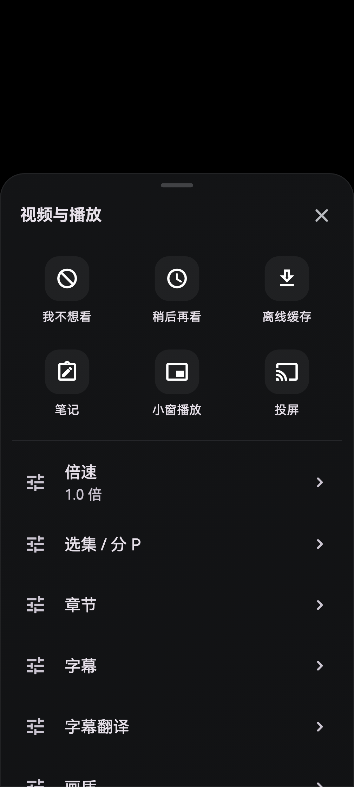
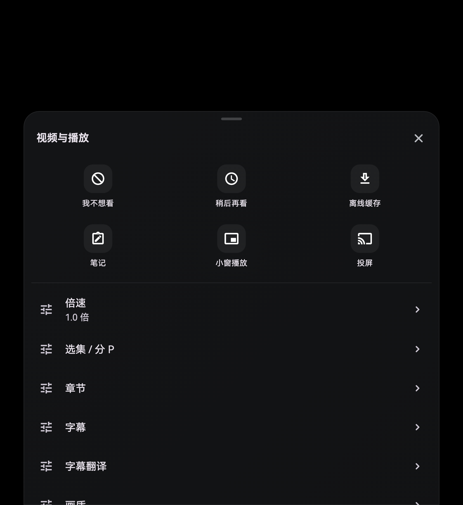
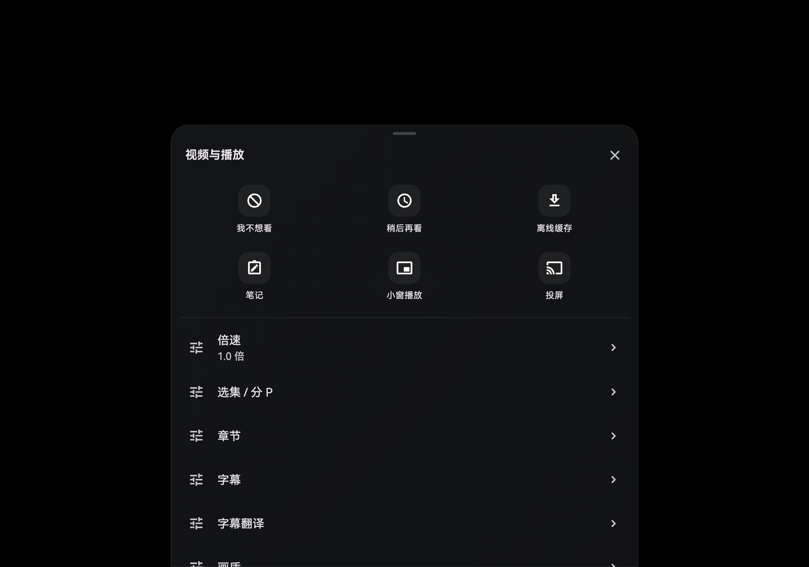

1008×2232 · DPR 2.875

2048×2232 · DPR 2.875

3184×2232 · DPR 2.875

按原生像素直接渲染，共用显示倍率。三屏 DPR 2.875 来自实测；单、双屏采用参考 DPR 2.875 展示，测试另扫描 2.5 / 3.25。字体来自本地设备，未分发。这里是组件测试画面，不能替代实机验收；“关于组件”图将快捷入口与关于头部/历程放在一起，实际应用分属不同页面。播放器菜单图使用无业务写入的测试回调。


